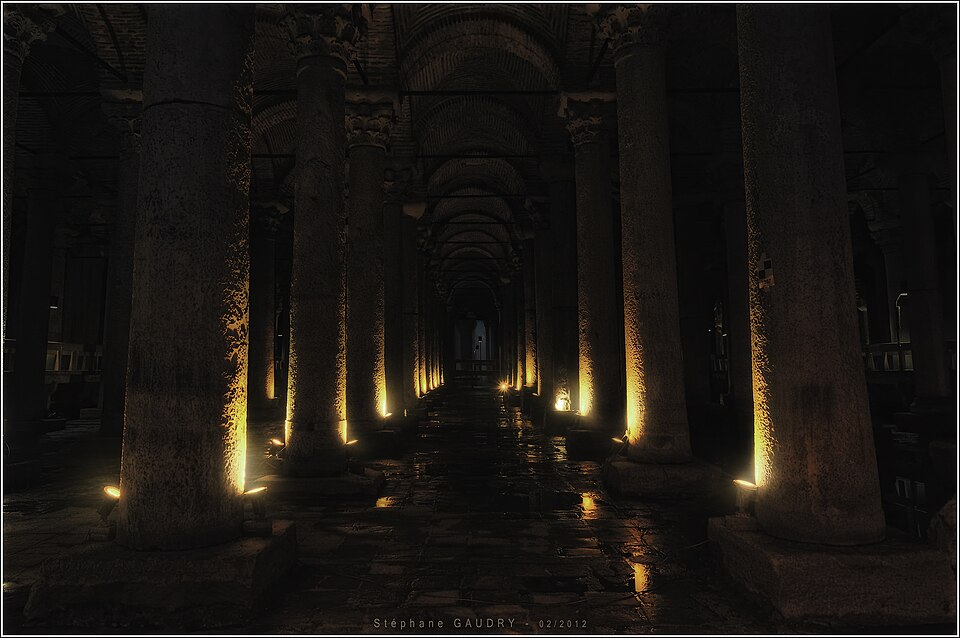
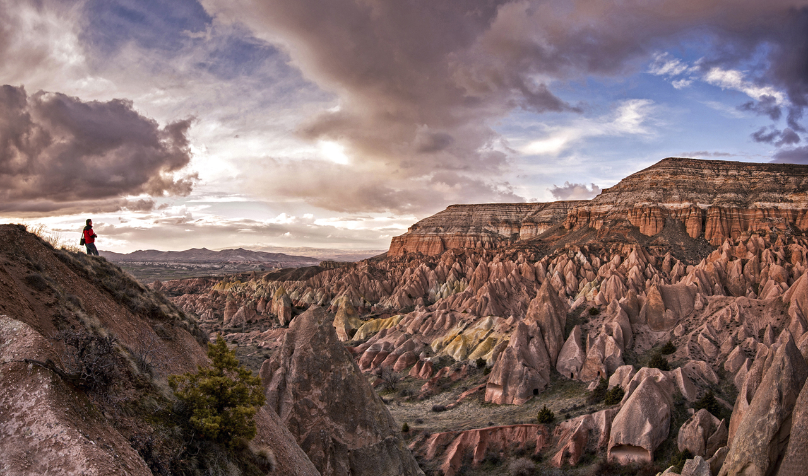
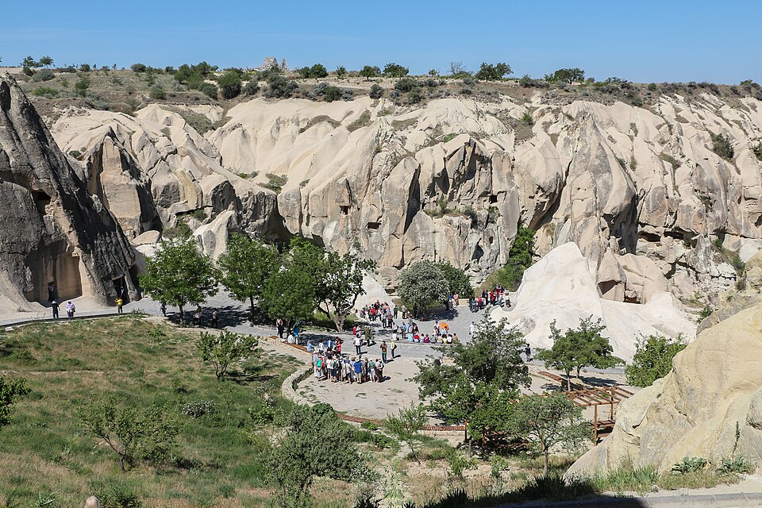
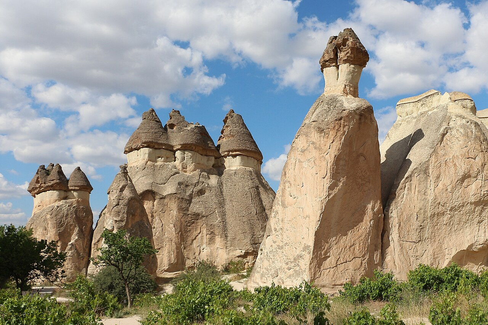
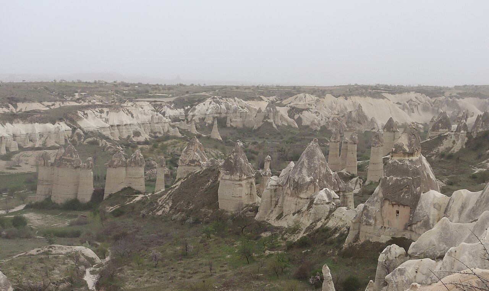
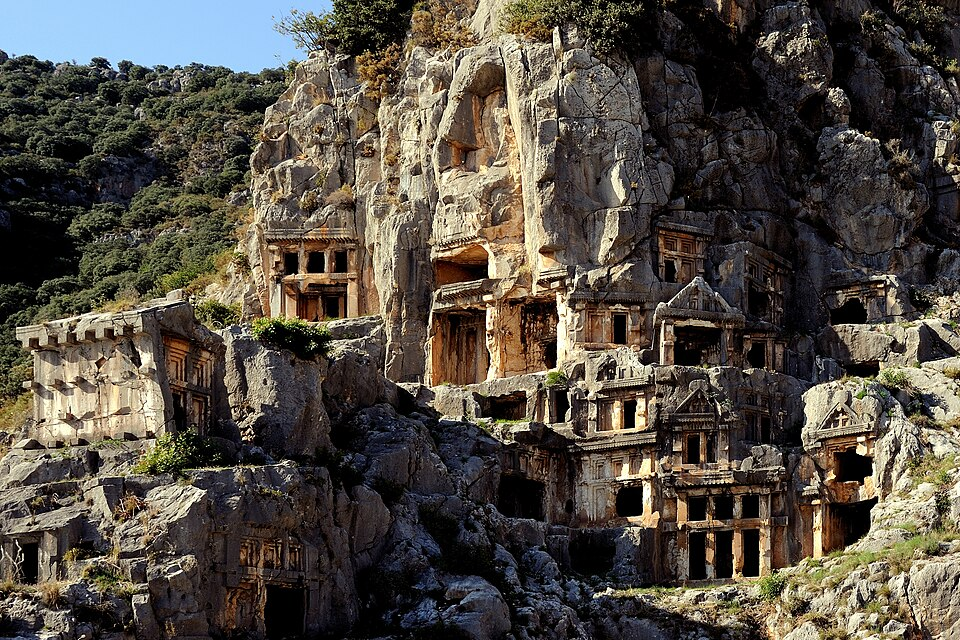
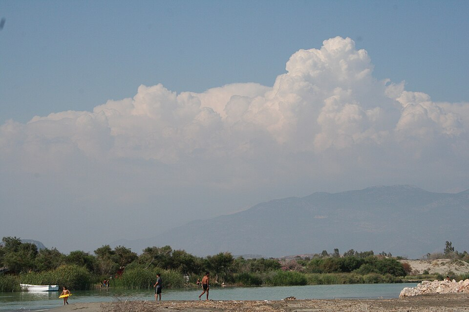

Interactive route map
先看地图，再看每天怎么走
地图中的实线是 D400 自驾路线，虚线是境内航班。点击编号可以查看建议停留时间和附近用餐点；地图导航链接会打开对应地点。
Trip at a glance
不全国开车，把时间留给真正重要的地方
这版按“卡什慢游”定稿——放弃了 Çıralı、Phaselis、Olympos 的完整海岸版本，因为那样会把卡什压缩到 2 晚，9 月 30 日还要赶在日落前抵达剧场。
3晚不是3个完整白天
9/27 首选，9/28 顺延
古剧场日落＋Kekova
安塔利亚取、达拉曼还
伊斯坦布尔→格雷梅✈安塔利亚🚗Myra→卡什→Kekova→Patara→厄吕代尼兹✈伊斯坦布尔
Risk control & Plan B
先保核心体验，再按时间主动删减
真正需要预案的是 9/29 跨区移动和 10/2 多站自驾。下面分两层看：先是订票阶段怎么选，再是当天到了现场怎么执行——这是两个不同时间点的问题，不要混着读。
默认订当天早班，订不到才改前一晚飞
- Plan A（默认）：订 9/29 当天 ASR→AYT 直飞，优先选 11:30 前落地的班次。
- 订不到合适直飞：先查 9/28 下午／晚间直飞；仍没有则选同一订单的 ASR→IST／SAW→AYT 联程，以 9/29 14:00 前到达安塔利亚为门槛。
- Plan B（更稳，可选）：9/28 第二次热气球结束后就飞 ASR→AYT，住机场附近；牺牲 Zelve／爱情谷，换 9/29 一整天从容开车。
格雷梅→AYT 陆路约 493 km、纯驾驶约 6小时15分，实际需 7–8 小时，不作为临时补救。查看直飞航线 ↗
离开机场的时间决定当天版本
12:30前
执行 Myra 完整版
AYT → Myra，游览 1 小时，再开约 45 km 到卡什。
12:30–15:30
取消 Myra 游览
仍沿同一路线经过 Demre，但不停景点，直接开往卡什；不为“打卡”增加夜间山路。
15:30 后
疲劳或恶劣天气：机场住宿
9/30 07:30 出发，经 Myra 中午到卡什；删掉老城上午，仍保住古剧场日落。
保证到达正确地点，不保证晚霞
- 热气球两天都取消接受退款，保留乌奇萨、格雷梅观景台、红谷、Paşabağ、Zelve 和爱情谷；雨雪影响户外时才改地下城＋陶艺＋土耳其浴。
- 卡什古剧场多云仍看海景和蓝调时刻；若下雨或临时关闭，10/1 游船早归后再尝试。
- 厄吕代尼兹多云保留泻湖景观，不为追晚霞改动 10/3 返程航班。
时间不够就砍，Kalkan 先砍
编号＝舍弃优先级，数字越大越先砍；1、2 是必须保住的核心，不砍。
1安全驾驶2厄吕代尼兹3Patara古城4Kaputaş5Kalkan
当天时间门槛（和上面的舍弃顺序是两件事）：
- 10:00最迟离开 Kaputaş。
- Kalkan只做 30 分钟外带午餐；没有停车位直接跳过。
- 12:30 后才到 Patara只看古城，不去沙滩；最迟 15:15 离开。
Day by day
方案 B · 每日上午、下午与晚上
09.24
周四 · Day 1
住：伊斯坦布尔
Airbnb
Airbnb

上午
抵达伊斯坦布尔
11:25 抵达 IST，入境、取行李并前往 Sultanahmet。

下午
蓝色清真寺
入住后只走苏丹艾哈迈德广场，不购买限时博物馆票。
晚上
屋顶晚餐
选择能看到圣索菲亚与蓝色清真寺的屋顶餐厅。
这样安排：国际长途飞行后的第一天不塞景点，避免入境或堵车导致预约作废。
09.25
周五 · Day 2
住：伊斯坦布尔
Airbnb
Airbnb
上午
圣索菲亚＋托普卡帕
08:30 开始，避开旅行团高峰；托普卡帕预留约 2.5 小时。

下午
地下水宫
之后根据体力决定是否去大巴扎，不强行塞满。
晚上
博斯普鲁斯渡轮
乘公共渡轮看日落与城市天际线，在亚洲区吃晚饭。
这样安排：核心收费景点集中在一天完成，第二天可以安心离开伊斯坦布尔。
09.26
周六 · Day 3
住：格雷梅
民宿 / 洞穴酒店
民宿 / 洞穴酒店

07:45–约11:00
SAW→NAV（已订）
VF3268，09:00 抵达；取行李后乘接送约 40–50 分钟到格雷梅。

12:30–16:00
乌奇萨＋鸽子谷
城堡高点看全区地貌，再用鸽子谷短步行连接第一批全景。

日落前60分钟
格雷梅日落观景台
步行登上 Sunset Point，俯瞰镇区、洞穴酒店与层叠山谷；日落后再确认热气球接人时间。
这样安排：上午航班已确认，下午立即进入最有辨识度的全景线；观景台是核心点，不再只写“格雷梅镇中心”。
09.27
周日 · Day 4
住：格雷梅
民宿 / 洞穴酒店
民宿 / 洞穴酒店
清晨
第一次热气球机会
约 04:30 接人，选择正规运营方 16～24 人篮。

上午
早餐、休息＋露天博物馆
热气球后先回房休息，约 10:30 入场；游览 2～2.5 小时。

17:00–日落
红谷／玫瑰谷日落
下午先回酒店午睡，日落前再去 Kızılçukur 观景区；不安排长距离徒步。
体力预期：这是全程最早起的一天。露天博物馆后必须午睡 2–3 小时，再看红谷日落；若热气球取消，也不要把下午塞成地下城半日团。
09.28
周一 · Day 5
主案：格雷梅
Plan B：AYT机场
Plan B：AYT机场
清晨
热气球顺延日
如果 9/27 取消，今天第二次尝试；不要重复预付两家公司。

10:30–13:30
Paşabağ＋Zelve
先看最典型的蘑菇状仙人烟囱，再进入相距约 5 分钟车程的洞穴村落。

15:00–16:30
爱情谷观景台
补齐最有辨识度的柱状地貌；不走完整长线，只做观景和短步行。
两种版本：9/27 已飞成＝清晨可在酒店露台看气球群，再完整走 Paşabağ、Zelve 和爱情谷；今天才飞＝早餐休息后仍可走缩短版。地下城降为大风、雨雪或对历史特别感兴趣时的替换项。
09.29
周二 · Day 6
住：卡什
Airbnb
Airbnb
上午
ASR→AYT
从格雷梅前往 Kayseri 机场，乘直飞安塔利亚的航班。

下午
取车＋Myra
安塔利亚机场取车，沿 D400 前往 Myra 看岩墓与古剧场。

晚上
抵达卡什
入住后只逛老城、吃晚饭，不把今天当作剧场日落日。
执行门槛：12:30 前驶离 AYT 才游 Myra；12:30～15:30 直接去卡什；更晚、疲劳或天气恶劣则住机场，次日早走。详见上方“风险预案”。
09.30
周三 · Day 7
住：卡什
Airbnb
Airbnb
上午
卡什老城慢逛
Uzun Çarşı 长街、狮子墓、港口；不用开车。
下午
海边休息
游泳、咖啡或回房午休，不在日落前安排远途景点。
日落
卡什古剧场
当天查询日落时间，提前 45～60 分钟步行抵达。
核心锚点：这一天不赶路。多云仍去看海景与蓝调时刻；若下雨或临时关闭，10/1 游船早归后作为第二次机会。
10.01
周四 · Day 8
住：卡什
Airbnb
Airbnb

上午
Kekova 出海
约 08:30 从卡什或 Üçağız 登船，选含午餐的拼船。
下午
水下古城＋Simena
船上俯看遗址；游泳安排在遗址水域之外的海湾。
晚上
返回卡什
港口附近吃海鲜，留出整理行李的时间。
这样安排：Kekova 值得完整一天，不压缩成两小时“打卡”项目。
10.02
周五 · Day 9
住：费特希耶
民宿 / 小酒店
民宿 / 小酒店

上午
Kaputaş 海滩
08:00 出发，最迟 10:00 离开；Kalkan 只外带午餐，无停车位直接跳过。

下午
Patara 古城优先
12:30 后才抵达则取消沙滩，只看遗址；无论如何最迟 15:15 离开。

日落
厄吕代尼兹
看蓝色泻湖日落，之后入住费特希耶。
删减顺序：先删 Kalkan，再删 Patara 沙滩；保留安全天亮驾驶、厄吕代尼兹、Patara 古城。多云也不改变返程结构。
10.03
周六 · Day 10
住：IST 机场附近
接送酒店
接送酒店
上午
费特希耶码头早餐
不安排完整游船；留足还车与加油时间。
下午
DLM→IST
达拉曼还车，优先选择直飞 IST 而非 SAW 的航班。
晚上
机场附近住宿
住 Arnavutköy 接送酒店，次日从 IST 离境。
这样安排：国际航班前一晚回到伊斯坦布尔，避免国内航班延误导致国际段误机。
10.04
周日 · Day 11
返程日
上午
早餐＋退房
搭酒店接送前往 IST，建议 10:00 前抵达航站楼。
13:20
飞往北京
登机前回望这十天：伊斯坦布尔的清真寺、卡帕多奇亚的热气球、卡什的地中海。国际航班起飞，次日抵达北京。
留白
不安排城市活动
机场住宿的价值，就是不用承担伊斯坦布尔早高峰风险——把最后的从容留给这趟旅行本身。
Time & distance matrix
每个点玩多久、上一段要走多久
“路程”按正常路线估算；自驾段同时给出纯驾驶时间和实际建议预留。景区时间已经包含基本拍照，但不包含正式用餐。
日期
地点
从上一点出发
建议游玩
最晚离开
9/24
苏丹艾哈迈德广场蓝色清真寺外围＋街区
IST → 老城约 50 km出租/接送 60–90 分钟
2–3小时
19:00
9/25
圣索菲亚游客区与外围
住宿步行约 5–15 分钟
1.5小时
10:00
9/25
托普卡帕宫含后宫建议时间
步行约 5 分钟排队另预留 20 分钟
2.5–3小时
13:15
9/25
地下水宫含拍照
步行约 12 分钟午餐后进入
45–60分
16:00
9/25
博斯普鲁斯渡轮Eminönü → Kadıköy
电车/步行 20–30 分包含候船缓冲
1.5–2小时
按船班
9/26
乌奇萨＋鸽子谷城堡全景与短步行
NAV → 格雷梅约 40 km接送约 40–50 分钟；放行李后出发
2.5–3小时
16:00
9/26
格雷梅日落观景台Sunset Point／Aşıklar Tepesi
镇中心步行约 15–25 分坡路，回程带照明
1–1.5小时
日落后
9/27
热气球接送、早餐、飞行、庆祝
酒店接送包含约 04:30 出发
3–4小时
约 08:30
9/27
格雷梅露天博物馆岩窟教堂群
格雷梅中心约 2 km车程 5–10 分钟
2–2.5小时
13:00
9/27
红谷／玫瑰谷日落观景区短走，不做长徒步
格雷梅约 7–10 km车程约 15–20 分钟
1.5–2小时
日落后
9/28
Paşabağ＋Zelve仙人烟囱＋洞穴村落
格雷梅 → Paşabağ约 7 km约15分；Paşabağ→Zelve约5分
2.5–3小时
13:30
9/28
爱情谷观景台柱状地貌与短步行
Zelve → 观景台约 10 km车程约 15–20 分钟
1–1.5小时
16:30
备选
Kaymaklı/Derinkuyu大风、雨雪或历史兴趣时二选一
格雷梅约 30–40 km单程 35–50 分钟
含交通约4小时
替换户外线
9/29
Myra 古城岩墓＋古剧场
AYT → Myra 157 km纯驾驶2小时05分；实际2.5小时
1–1.5小时
17:00
9/29
抵达卡什入住＋老城晚餐
Myra → 卡什 45 km纯驾驶42分；实际约1小时
2小时
不设硬点
9/30
卡什老城＋古剧场老城、港口、狮子墓、日落
全程步行当天不开车
合计5–6小时
日落后
10/1
Kekova＋Simena水下古城与游泳
卡什港出发若 Üçağız 出发则单程约50分车程
8–9小时
约 18:00
10/2
Kaputaş 海滩观景＋下海
卡什 → Kaputaş 20 km纯驾驶18分；预留30分
1.5小时
10:30
10/2
Kalkan（可跳过）仅外带午餐
Kaputaş → Kalkan 6 km约 10–15 分钟
最多30分
11:00
10/2
Patara 古城＋沙滩遗址优先，沙滩次之
Kalkan → Patara 15 km约 20–25 分钟
2.5小时
15:15
10/2
厄吕代尼兹泻湖与日落
Patara → Ölüdeniz 84 km纯驾驶1小时27分；实际1小时45分
1.5小时
日落后
10/3
费特希耶码头早餐＋短逛
Ölüdeniz → Fethiye 17 km约 25–35 分钟
1–1.5小时
09:30
10/3
Dalaman 还车加油、验车、拍照
Fethiye → DLM 50 km纯驾驶49分；预留1小时10分
还车30–45分
航班前2.5小时
Eat along the route
每个停留点附近，真正顺路的餐厅
按你“不想顿顿烤肉、预算不要太高”的要求筛选。价格为两人、不喝酒的规划区间；土耳其通胀较快，进店后先看菜单。
伊斯坦布尔 · Sirkeci
Balkan Lokantası
历史区最实用的家常菜馆，柜台指菜；适合圣索菲亚或地下水宫之后午餐。
伊斯坦布尔 · Kadıköy
Çiya Sofrası
渡轮到亚洲区后的地方菜选择；从冷菜柜挑蔬菜、豆类和一份主菜即可。
格雷梅
Seten Restaurant
2026 米其林推荐，景观与传统菜兼顾；只安排一顿稍正式的卡帕多奇亚晚餐。
Ürgüp · 雨天备选顺路
Tık Tık Kadın Emeği
女性合作社经营的传统家常菜，米其林推荐；地下城改为雨天方案时顺路安排。
Uçhisar
Saklı Konak
适合乌奇萨结束后吃午餐；点汤、Mantı和一道蔬菜即可，不必点完整烤肉套餐。
Myra · Demre
Demre İpek Restaurant
Myra 游览前后的便捷选择；Demre 的家常菜和 Pide 通常比卡什、Kalkan便宜。
卡什 · 老城北侧
Bi Lokma
家庭式土耳其菜，汤、米饭、蔬菜、饺子选择比海港餐厅全面；作为卡什日常正餐首选。
卡什 · 古剧场日落后
Ruhi Bey Meyhanesi
全程唯一一顿正式海鲜；只点两款 Meze、一条鱼和沙拉，不点酒和大拼盘。
Kekova / Üçağız
Hassan Restaurant
只有选择 Üçağız 上船且游船不含午餐时才考虑；若船票已含午餐，不必重复消费。
Kaputaş / Kalkan
不在海滩吃正餐
Kaputaş 只有简单小卖部；带水和水果，在 Kalkan 找 Pide 店外带，不进港口景观餐厅；没有停车位直接跳过。
Patara · Gelemiş村
Durak Lokantası
适合从古城出来后简单吃，价格级别低于 Kalkan；如果时间紧，也可只买 Gözleme。
厄吕代尼兹
Kumsal Pide
泻湖日落前后的低负担选择；两人点一份 Pide、一碗汤和沙拉，不用去海滨西餐厅。
费特希耶 · Paspatur
Nefis Pide
还车前一晚或次日早餐后的简单正餐；比鱼市场更符合预算，也不需要复杂称重和加工。
每天用餐逻辑：Airbnb 自备简单早餐；午餐用 Lokanta、汤、Pide 或 Gözleme；晚餐才坐下来吃。Kekova船餐已经包含就不要再订岸上午餐。全程正式海鲜仅卡什一顿，餐饮仍可控制在两人约 ¥2,200～2,800。
Where to stay
Airbnb 为主，一晚过渡城市住小酒店
| 地点 | 晚数 | 推荐区域 | 合理总价 | 关键筛选 |
|---|---|---|---|---|
| 伊斯坦布尔 | 2 | Sultanahmet / Cankurtaran | ¥700～1,100 | 步行到圣索菲亚；自助入住；行李寄存 |
| 格雷梅 | 3 | Göreme 镇中心 | ¥1,100～1,600 | 有露台；步行到餐厅；热气球可接送 |
| 安塔利亚机场（Plan B） | 0 / 1 | AYT 机场接送范围 | ¥350～550 | 仅替换 9/28 格雷梅一晚；确认深夜接送 |
| 卡什 | 3 | 古剧场—老城之间 | ¥1,100～1,700 | 步行到剧场；停车明确；不要住半岛深处 |
| 费特希耶 | 1 | Karagözler / 老城码头 | ¥350～550 | 一晚优先小酒店，避免高额清洁费 |
| IST 机场附近 | 1 | Arnavutköy | ¥600～850 | 确认接送时间、价格与航站楼集合点 |
Airbnb 比价口径：必须填写准确日期和 2 位房客，再看最后付款页的整段总价；夜价之外还可能有一次性清洁费、平台服务费和税费。安塔利亚机场 Plan B 是替换一晚格雷梅住宿，不是额外增加第 11 晚。
Flights & road trip
三段境内航班＋四天 D400 自驾
Domestic flights
境内航班
¥2,800～3,500
- 三段均按每人至少 20kg 托运行李比价
- 9/26：SAW→NAV，VF3268，07:45–09:00（已订，订单显示已付 ¥588）
- 9/29：ASR→AYT，直飞且首选 11:30 前落地
- 10/3：DLM→IST，不选 SAW，含托运行李
Car rental
Cizgi / Enterprise
¥2,800～3,500
- 9/29 安塔利亚机场取车
- 10/3 达拉曼机场还车
- 自动挡紧凑型，含加强保险
- 必须确认异地还车费
Road cost
油费与停车
¥500～700
- 主线约 393 公里，含绕行按 420～460 公里
- 汽油约 30～35 升
- 另含停车、HGS 与补油误差
Balloon booking
热气球怎么订：9/27 只订一张，9/28 留作顺延
首选官网直接订 Turquaz Classic：第一批升空、约 60 分钟、最多 20 人；当前参考约 €170/人。更便宜可比较 Discovery Daylight，但属于日出后的第二批升空。不要同时预付 9/27 和 9/28，也不要同时预付两家公司。
- 下单日期选 2026-09-27、2 位成人；优先 First Ascent / First Flight。
- 确认 Göreme 主飞行区、酒店往返接送、篮筐人数和实际飞行时长。
- 要求书面确认：民航因天气停飞全额退款；9/28 有空位时优先顺延。
驾照确认模板：邮件明确写明持“香港正式驾驶执照原件＋香港运输署签发的国际驾驶许可证（IDP）”，要求租车公司书面确认接受，并同时确认押金、保险免责额、轮胎/玻璃/底盘保障及 Dalaman 精确还车位置。
Budget for two
两人全部费用，目标控制在 3.6 万左右
| 项目 | 两人预算 |
|---|---|
| 北京—伊斯坦布尔国际往返机票 | ¥12,628（已付） |
| 10 晚住宿 | ¥3,850～5,800 |
| 土耳其境内 3 段飞机 | ¥2,800～3,500 |
| 4 天租车＋保险＋异地还车 | ¥2,800～3,500 |
| 油费、停车与 HGS | ¥500～700 |
| 卡帕多奇亚热气球 | ¥2,800～3,300 |
| Kekova 拼船 | ¥800～900 |
| 其他门票（地下城仅为天气备选） | ¥2,700～3,500 |
| 10 天餐饮 | ¥2,200～2,800 |
| 两人旅行保险 | ¥460～740 |
| 机场接送与城市交通 | ¥700～950 |
| 两人 eSIM | ¥120～220 |
| 两人全程预计 | ¥32,400～38,500 |
Practical guide for Hong Kong travellers
证件、驾驶、付款、天气与安全
护照与签证
- 持香港特区护照，旅游停留 90 天内目前免签。
- 持 BN(O) 护照并非同一规则，需要按土耳其官方要求办理电子签证。
- 护照身份不同，务必以实际使用的旅行证件核对。
- 出发时护照有效期距回程日建议至少还有 6 个月；临近有效期务必先换发再订票。
香港驾照
- 建议带香港正式驾驶执照原件＋香港运输署签发的 IDP。
- IDP 有效期为签发日起 1 年；申请时需符合香港运输署资格。
- 另带护照、主驾驶人实体信用卡；最终以租车公司书面确认为准。
旅行保险
- 两人 11 日单次全球保障预留 HK$500～800（约 ¥460～740）。
- 至少比较海外医疗 HK$100 万以上、医疗运送、旅程改道、行李延误和个人责任。
- 核对热气球是否属于承保娱乐活动；滑翔伞必须另行确认。租车自负额保障不能代替租车公司的 CDW。
D400 驾驶
- 土耳其靠右行驶，卡什老城道路狭窄，不要开车进核心步行区。
- 山海路段弯道多，天黑后不赶路；Kaputaş 停车位有限，必须早到。
- 取还车时录制车身、轮胎、玻璃、油量和里程；保留加油小票。
付款与现金
- 酒店、租车和较大餐厅可刷卡；小店、停车、市场和部分船家准备现金。
- 刷卡机询问币种时选择 TRY，不选择人民币或港币动态换汇。
- 鱼类按公斤计价时，先确认整条鱼的总价再下单。
9月底穿衣
- 伊斯坦布尔：薄外套＋防雨层；海风时体感偏凉。
- 卡帕多奇亚清晨：羽绒背心或抓绒、长裤；热气球集合时温度最低。
- 卡什海岸：短袖为主，带防晒、水鞋和一件晚间薄外套。
网络与离线准备
- 出发前装 eSIM；同时下载 Google Maps 土耳其离线区域。
- 保存租车、住宿、热气球和游船确认单截图。
- 本攻略地图需联网加载底图，但路线、时间表和图片可离线阅读。
插头与充电
- 土耳其使用 C / F 型两圆脚插座，230V；香港 G 型插头需要转换器。
- 手机、相机和电脑充电器标有 100–240V 时只需转换插头。
- 吹风机等大功率设备必须检查电压标签，不要只靠插头转换。
紧急联系方式
- 土耳其警察、救护、消防统一拨 112。
- 香港入境处境外 24 小时求助：+852 1868，也可向 (852) 1868 发送 WhatsApp。
- 中国驻土耳其使馆领保：+90 538 821 5530；驻伊斯坦布尔总领馆：+90 531 338 9459。
热气球与游船
- 热气球只订 9/27 第一批升空；天气取消应全额退款，并在有空位时顺延 9/28。
- 下单前核对 Göreme 主飞行区、篮筐人数、酒店接送和实际飞行时长，不同时预付两家公司。
- Kekova确认从卡什还是 Üçağız 出发、午餐是否包含、Simena停留多久。
- 游船日带防晒、帽子、水、泳衣和防水袋。
卡什古剧场
- 官方资料确认剧场位于卡什主广场以西约 500 米，但未提供稳定的独立开放时间和票价。
- 不要把“全天免费”当作已确认事实；可能因活动、维护或现场管理临时变化。
- 出发前一周请住宿方确认开放时间、收费、活动占用和日落后离场方式。
出发前一周复核
- 9/29 ASR→AYT 航班时间、直飞状态及三段托运行李额度。
- 9/30 卡什实际日落、古剧场开放状态和天气。
- 景点开放日、餐厅营业日、道路施工及租车门店交接点。
Before booking